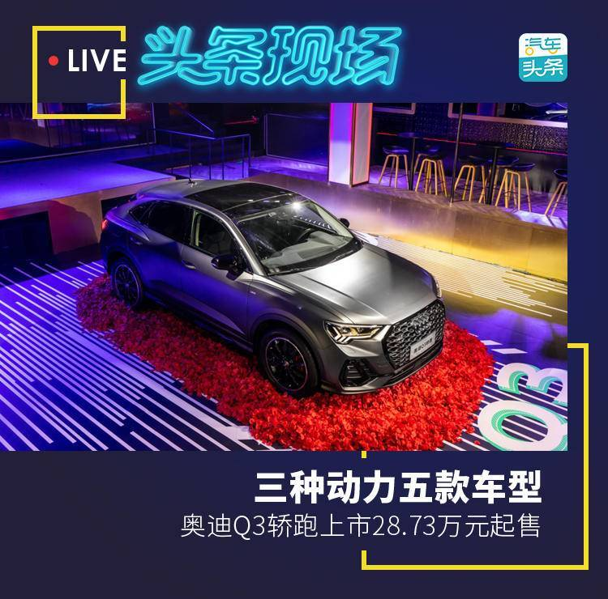
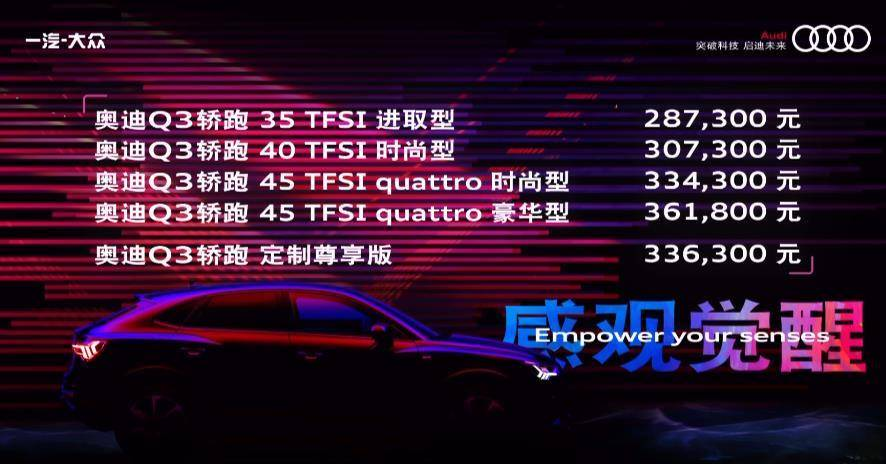
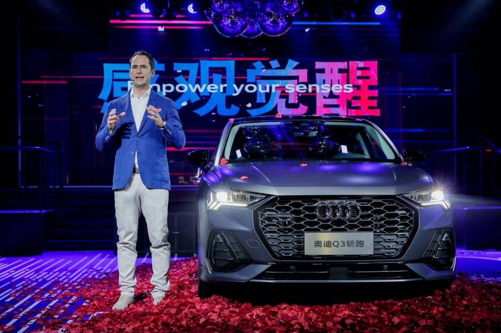
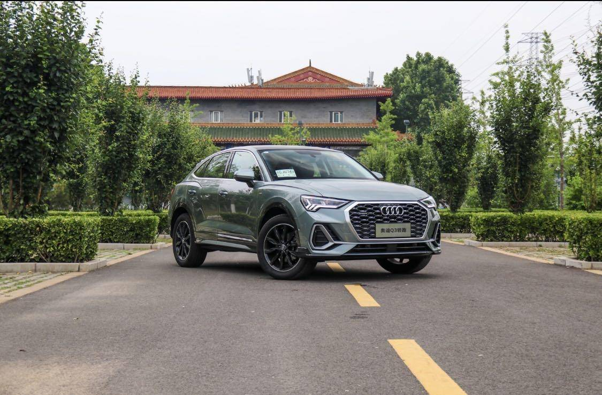
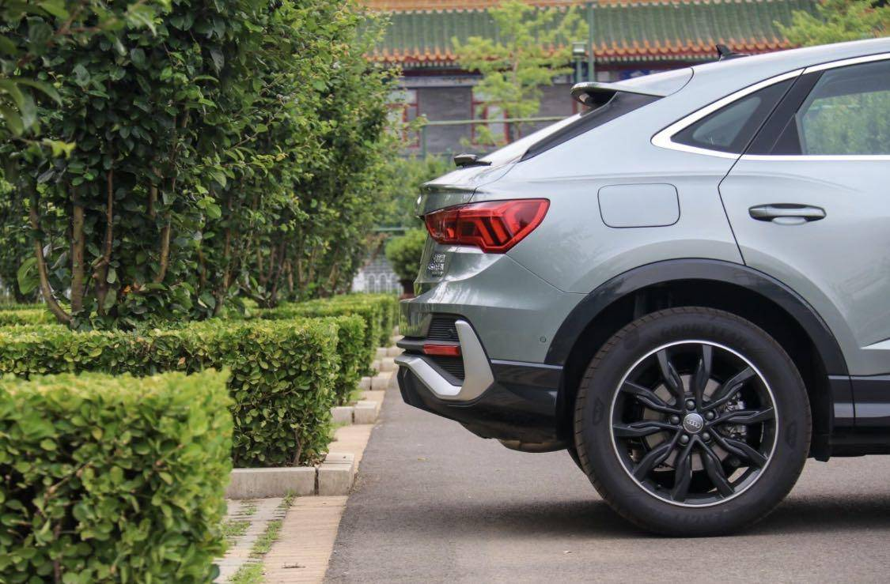
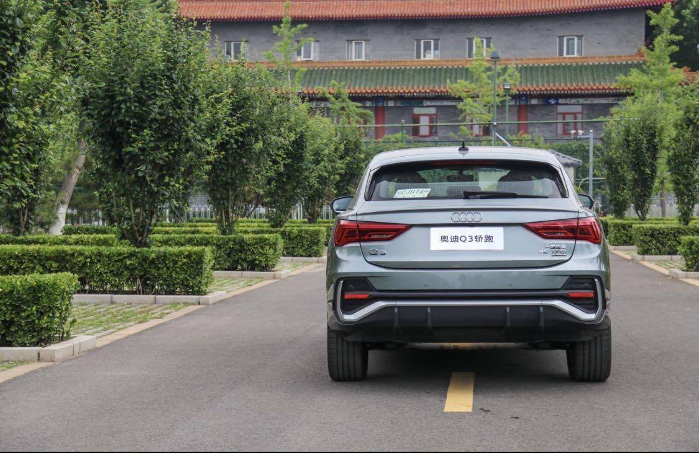
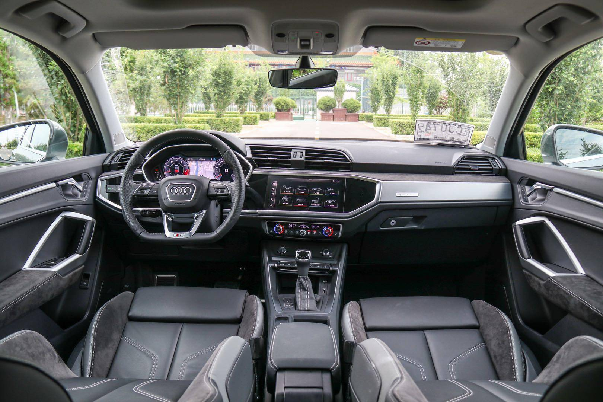
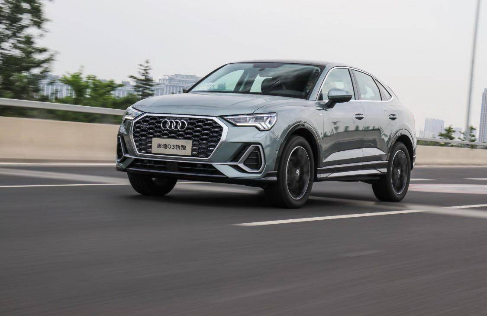
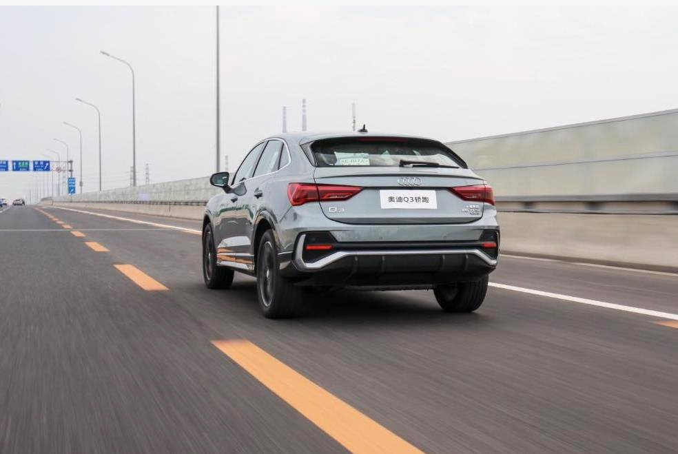
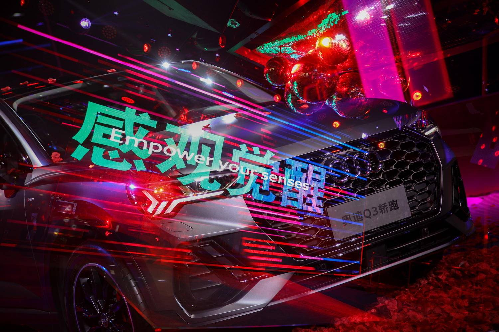

近年来，随着消费群体的年轻化趋势，越来越多的车企接连推出紧贴年轻化标签的车型，外观设计运动激进化则普遍成为车企吸引年轻消费者较统一的集中“火力点”。正是嗅探到这样的趋势，近两年各大车企陆续推出了不少轿跑车型。顺应这样的市场环境，奥迪也将注意力开始放到此类车型身上，在同类车型奥迪Q8以品牌“旗舰”的身份亮相后，一汽-大众奥迪将这一类车型开始下放到更加亲民的车系中去，推出了奥迪Q3轿跑。

5月29日，作为国产奥迪Q3家族的衍生车型，奥迪Q3轿跑正式上市。新车提供三种动力，五款不同车型，售价区间28.73-36.18万元。

一汽-大众奥迪销售事业部总经理石柏涛表示：“奥迪Q3轿跑绝对是豪华A级SUV中的颜值担当，它不但具备超高颜值和回头率，更能够唤醒消费者的所有感观。未来，相信它一定会成为更多注重个性和品位的年轻消费者的选择。

从外观上看，奥迪Q3轿跑车头保留了经典的八角形Single frame黑色格栅，根据车型版本不同，提供炭黑蜂窝、镀铬蜂窝等选项。两侧梯形进气口中也配有亮银和炭黑两种导流片造型。可以说，整个车身的前半部分基本和国产Q3没有任何区别，仍然继承了奥迪的设计，车头足够犀利。

奥迪Q3轿跑的长宽高分别为4,518mm、1,843mm和1,573mm，较宽的车身尺寸更好地体现了车辆的力量感。但来到车身后部，一股轿跑SUV的感性气息却扑面而来。车顶线条通过B柱之后，开始向下传递，营造出跨界的溜背风格，因此整车的高度相比传统Q3下降了43mm，车长微增23mm，更富有“跑味儿”。

相比奥迪Q3，除了更加倾斜的D柱外，奥迪Q3轿跑在车尾最明显的变化是尾门略微上翘的鸭尾式折线造型与加长的扰流板，共同塑造了性感跳动的尾部特征。
此次，一汽-大众奥迪为奥迪Q3轿跑准备了11种外部颜色，新增环礁蓝色。同时提供18英寸/19英寸两种尺寸铝合金轮辋，含有7种不同对比色/纯色供选择。此外，奥迪Q3轿跑标配S-line外观套件，全系提供黑光包选装。

内饰方面，奥迪Q3轿跑保持着家族式的设计风格，与普通版奥迪Q3相比几乎没有变化。全系标配的奥迪虚拟座舱在根据车型配置的高低，尺寸也有所不同。此外，全系标配三温区自动空调、前排电动座椅调节、雨量传感器等。高配车型还拥有前排座椅加热、B&O品牌音响等配置。

动力方面，奥迪Q3轿跑提供三个版本供消费者选择。其中，35TFSI车型搭载1.4T发动机，其最大功率为110kW，峰值扭矩250N·m；40TFSI和45TFSI发动机搭载第三代EA888 2.0T发动机，最大功率分别为137kW和162kW，峰值扭矩分别是320N·m和350N·m。
与发动机匹配的是7速S tronic®湿式双离合变速器（DQ381），45TFSI 还装备奥迪quattro四驱系统。同时，顶配车型还拥有越野、舒适、自动、动态、高效五种驾驶模式

据汽车头条APP此前报道，2020年作为一汽-大众奥迪产品矩阵全面布局完成的关键之年，年内将有多达23款全新产品入市，形成连续第三年的产品大年攻势。从年初起，一汽-大众奥迪已经先后推出了全新奥迪A4L、全新奥迪Q7等车型。而在高性能车型方面，还有多达11款产品的引入将全面完成Audi Sport家族从A级到D级别的产品布局，RS Q8、S8L等明星车型也将悉数亮相；新能源车型方面，全新奥迪A6L TFSI e已于1月18日正式上市、奥迪e-tron sportback将于年内引入，同时奥迪e-tron也将实现国产，不断完善产品矩阵。

此次奥迪Q3轿跑的上市，在让一汽-大众奥迪进一步丰富产品矩阵的同时，也打开了新的细分市场。未来将于宝马X2，奔驰GLA等车型展开直面竞争。相信凭借奥迪Q3轿跑的产品实力，会在轿跑SUV领域有自己的一番作为。